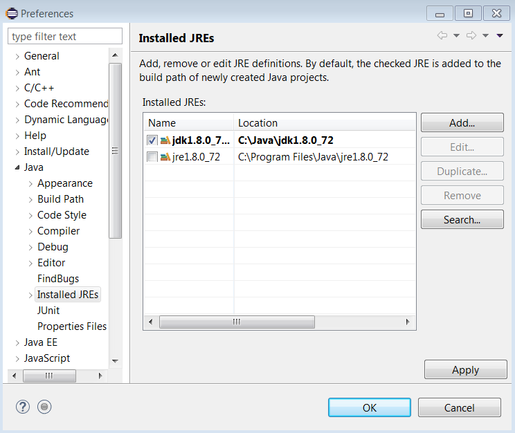

Perguntas frequentes sobre as ferramentas
Perguntas sobre Java
[IMPORTANTE] Existe alguma restrição sobre a directoria de instalação do software?
Sim, infelizmente devido a diversos bugs em ferramentas, o software não funciona corretamente em pastas cujo caminho tenha espaços e/ou caracteres acentuados (sobretudo em Windows). Exemplos de pastas problemáticas:
C:\program files
C:\users\André
C:\users\Alice Silva
Dado este problema a sugestão é instalar o software numa pasta sem acentos nem espaços, como C:\java\.
Devem-se instalar exatamente as versões pedidas ou podem ser outras?
Sim, devem procurar instalar as versões pedidas de forma a terem um ambiente igual (ou o mais parecido possível) com o ambiente de referência (dos laboratórios).
Se não for possível encontrar a versão exata, pode-se instalar a versão mais próxima disponível.
Como confirmar se estou a usar as versões certas das ferramentas?
Abrir uma consola e executar os seguintes comandos:
$ java -version`
$ javac -version
$ mvn -version
Pergunta: Na RNL (laboratórios da Alameda), que versões do Java estão disponíveis e como as posso usar?
Ver resposta na página da RNL.
Como confirmar se o PATH está correcto?
- Abrir uma consola Linux e executar
$ echo $PATH - Abrir uma consola Windows e executar
$ echo %PATH%
Como resolver o seguinte problema na compilação? Exception in thread "main" java.lang.Error: Unresolved compilation problems
As classes foram corrompidas por diferentes compiladores em simultâneo (por ex. Eclipse e Maven). Para corrigir ir a Eclipse -> Menu 'Project', 'Clean', 'clean all projects". Depois, correr mvn clean.
Perguntas sobre Maven
O meu nome de utilizador tem acentos ou espaços e preciso de mudar a localização do repositório local Maven. Como se faz?
O repositório local do Maven é a pasta onde são guardadas todas as dependências obtidas pelo Maven.
Por omissão, a localização do repositório local é:
- ~/.m2 (Unix/Mac)
- C:\Users\Username\.m2 (Windows)
Para alterar a configuração, editar o ficheiro conf\setting.xml que está na pasta de instalação do Maven (tipicamente apontada pela variável de ambiente M2_HOME).
Não esquecer também de atualizar a configuração do repositório Maven no seu IDE. Por exemplo, no Eclipse, aceder a Window - Preferences - Maven - User Settings e indicar a nova configuração.
Como posso consultar o effective POM de um projeto Maven?
O effective POM é o resultado da combinação do POM do projeto com os valores das propriedades por omissão. É útil para perceber todas as definições que são assumidas pela ferramenta, como valores de propriedades, por exemplo.
Pode-se consulta através do seguinte comando:
$ mvn help:effective-pom
Existe forma de consultar a árvore de dependências de um projeto Maven?
Sim, através do seguinte comando:
$ mvn dependency:tree
Como remover o aviso de character encoding do Maven?
Acrescentar a seguinte configuração ao pom.xml:
...
<properties>
<project.build.sourceEncoding>UTF-8</project.build.sourceEncoding>
<project.reporting.outputEncoding>UTF-8</project.reporting.outputEncoding>
...
Como remover o aviso Warning: killAfter is now deprecated" do Maven?
Para remover este aviso (inofensivo) pode-se acrescentar a seguinte configuração ao pom.xml:
<plugin>
<groupId>org.codehaus.mojo</groupId>
<artifactId>exec-maven-plugin</artifactId>
...
<configuration>
<killAfter>-1</killAfter>
...
</configuration>
</plugin>
Como definir a versão do Java considerada pelo Maven?
Qual a diferença entre exec:java e appassembler ?
mvn exec:java corre dentro do maven e tem os argumentos definidos no pom.xml com bons valores por omissão (opção preferida para desenvolvimento).
mvn package appassembler:assemble corre de forma autónoma do Maven e necessita que sejam indicados os argumentos (opção preferida para demonstração)
target/bin/appassembler/... .bat arg0 arg1 ...
Via Eclipse também se pode correr, depois de compilado, definindo-se os argumentos nas "Run Configurations".
Como se faz a partilha de código através de módulos Maven ?
Para o fazer, criar um projeto à parte (ex. my-library).
No pom.xml, definir as coordenadas groupId (ex. example), artifactId (ex. my-library) e version (ex. 1.0-SNAPSHOT).
Para disponibilizar o módulo no repositório Maven local (~/.m2), fazer: mvn install.
Para usar o módulo noutro projeto, basta acrescentar a dependência, indicando as coordenadas groupId, artifactId e version tal como se faz em relação a módulos que estão no repositório Maven central.
É possível ter POMs hierárquicos? Como se usam?
O Maven tem dois conceitos hierárquicos: modules e parent.
<project ...>
<!-- the parent relation -->
<parent>
<groupId>example</groupId>
<artifactId>parent</artifactId>
<version>1.0.0-SNAPSHOT</version>
</parent>
<artifactId>module1</artifactId>
<!-- the modules -->
<modules>
<module>submodule1</module>
<module>submodule2</module>
</modules>
</project>
A relação parent indica que configurações de propriedades, repositórios e plug-ins devem ser herdadas do projeto pai.
Um module indica que o subprojeto deve ser incluído no processamento do ciclo de vida do projeto de topo.
Dúvidas sobre Eclipse
Pergunta: Consigo compilar e executar os exercícios de código com o Maven no terminal, mas como o faço dentro do Eclipse?
O Eclipse, depois de instalado seguindo o guia, consegue invocar ações de Maven.
Para um projeto Maven no Eclipse, é necessário criar configurações de Maven Build, como é descrito em seguida:
Package Explorer: Right-click no nome do projeto -> Run As -> Run Configurations... -> Maven Build -> New launch configuration

Especificando em Base directory: o caminho para o diretório do projeto e em Goals: a sequência de ações Maven a desempenhar, pode clicar em Apply e a partir daí poderá executar com esta parametrização através do botão Run.
Neste exemplo específico, ao clicar em Run serão executados para o projeto hello-ws-cli_juddi os comandos:
mvn generate-sources
mvn compile
mvn exec:java
Já segui todas as instruções no guia de software mas mesmo assim o Eclipse não consegue compilar código Java, o que poderá ser o problema?
É possível que, apesar do JDK estar instalado, o Eclipse esteja a apontar para um módulo JRE (Java Runtime Environment), que apenas permite executar programas Java mas não compilar. Para resolver esta questão, por exemplo em Windows, é necessário seguir os seguintes passos:
- Ir a Window -> Preferences -> Java -> Installed JREs -> Add...
- Indicando o diretório do JDK instalado, deve obter o seguinte resultado (ajustando a versão):

Carregue em Apply, OK. A partir de agora, o Eclipse está configurado para invocar as ferramentas de compilação de Java, tais como o javac.
Já configurei o Eclipse para usar o JDK mais recente, mas mesmo assim quando importo um projeto Maven, o Eclipse assume que é para usar J2SE5 ou outra qualquer versão estranha, como corrigir isto?
Para assegurar que o projeto Maven funciona como esperado, recomenda-se dar uma indicação explícita da versão de JDK a usar para o projeto.
Para resolver esta questão, é necessário especificar a versão no pom.xml do projeto, inserindo as tags
maven.compiler.source e maven.compiler.target aninhadas na tag properties.
Exemplo concreto, aplicado ao pom.xml do projeto hello-ws-cli_juddi:
...
</dependencies>
<properties>
<project.build.sourceEncoding>UTF-8</project.build.sourceEncoding> <mainclass>example.cli.HelloClient</mainclass>
<maven.compiler.source>1.8</maven.compiler.source> <maven.compiler.target>1.8</maven.compiler.target>
...
</properties>
<build>
...
Quando tento executar o Eclipse este pára com erro 13. Como resolver?
Não vale a pena reinstalar o Eclipse.
Basta editar a PATH e remover C:\ProgramData\Oracle\Java\javapath caso exista, e garantir que o caminho certo é o primeiro na lista de caminhos da PATH. Se existirem outros caminhos devido a atualizações, estes devem ser removidos.
Perguntas sobre gRPC
Não consigo correr o protocno meu portátil Mac. Como resolver?
O compilador do gRPC (protoc) tem uma "open issue" com os processadores M1 da Apple. Quando se tenta executar o protoc (por exemplo, fazendo mvn install num projeto contendo o contrato de um gRPC), ocorre um erro.
Para contornar este problema, devem procurar estas duas tags <protocArtifact> no POM:
<protocArtifact>com.google.protobuf:protoc:${version.protoc}:exe:${os.detected.classifier}</protocArtifact>
<pluginId>grpc-java</pluginId>
<pluginArtifact>io.grpc:protoc-gen-grpc-java:${version.grpc}:exe:${os.detected.classifier}</pluginArtifact>
E substituí-las por estas:
<protocArtifact>com.google.protobuf:protoc:${version.protoc}:exe:osx-x86_64</protocArtifact>
<pluginId>grpc-java</pluginId>
<pluginArtifact>io.grpc:protoc-gen-grpc-java:${version.grpc}:exe:osx-x86_64</pluginArtifact>